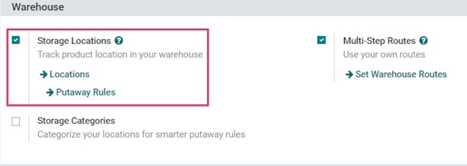

Conteo por ciclos¶
Para la mayoría de las empresas solo es necesario contar el inventario una vez al año. Así que luego de hacer un ajuste de inventario en Odoo, la fecha del próximo conteo se programará de forma predeterminada para el 31 de diciembre del año en curso.
Sin embargo, para algunas empresas es esencial contar con un conteo de inventario correcto en todo momento. Estas empresas usan recuentos cíclicos para mantener los niveles de inventario importantes actualizados. El recuento cíclico es un método que las empresas usan para contar su inventario más seguido en algunas ubicaciones para asegurarse de que el inventario físico va con los registros de su inventario.
Activar ubicaciones de inventario¶
En Odoo, los recuentos cíclicos se realizan según la ubicación. Por eso necesita activar la función ubicaciones de inventario antes de realizar un recuento cíclico.
Para activar esta función, vaya a y baje a la sección Almacén. Haga clic en la casilla de verificación junto a Ubicaciones de almacenamiento y guarde los cambios.
Cambiar la frecuencia del recuento de inventario por ubicación¶
Ya que activó la función ubicaciones de almacenamiento, puede cambiar la frecuencia del recuento de inventario dependiendo de las ubicaciones específicas que se crear en un almacén.
Para ver y editar ubicaciones, vaya a . Esto le mostrará la página de Ubicaciones donde están todas las ubicaciones que se crearon y se enlistaron dentro del almacén.
Desde esta página, haga clic en una ubicación para mostrar la página de ajustes e esa ubicación en específico. Haga clic en Editar para editar los ajustes de la ubicación.
En la sección Conteo cíclico ubique el campo Frecuencia de inventario (días), que debería estar configurado a 0 (si no se ha editado la ubicación antes). En este campo cambie el valor a cualquier número de días que quiera.

Example
Una ubicación que necesita un recuento de inventario cada 30 días debe tener el valor de Frecuencia de inventario (días) en 30.
Ya que se cambió la frecuencia al número de días deseados, haga clic en Guardar para guardar los cambios. Ahora, cuando se aplique un ajuste de inventario en esta ubicación, la siguiente fecha de recuento programada se configurará en automático, según el valor que se ingresó en el campo Frecuencia de inventario (días).
Recuento de inventario por ubicación¶
Para realizar un recuento cíclico en una ubicación en específico dentro de un almacén, vaya a . Se le redirigirá a una página de ajustes de inventario que contenga todos los productos que están en existencias actualmente, con cada producto enlistado en cada línea.
Desde esta página puede usar los botones Filtros y Agrupar por (que se encuentran en la parte superior de la página, debajo de la barra Buscar…) para seleccionar ubicaciones específicas y realizar recuentos de inventario.

Para seleccionar una ubicación específica y ver todos los productos dentro de esa ubicación, haga clic en Agrupar por y luego en Agregar un grupo específico para mostrar un nuevo menú desplegable a la derecha.
Haga clic en Ubicación en el menú desplegable y después en Aplicar. Ahora podrá ver menús desplegables condensados para cada ubicación en el almacén que tenga productos en existencia. Podrá realizar el recuento cíclico para todos los productos de esa ubicación.
Truco
En almacenes grandes que tengan varias ubicaciones y un gran número de productos, es probable que sea más fácil buscar la ubicación específica que quiere. Para hacer esto, desde la página Ajustes de inventario haga clic en Filtros. Haga clic en Agregar filtro personalizado para mostrar un nuevo menú en la parte derecha. Si hace clic en este menú, se mostrarán tres menús desplegables.
Para el primer campo, haga clic y seleccione Ubicación en el menú desplegable. Para el segundo campo, deje el valor contiene tal cual está. Para el tercer campo, escriba el nombre de la ubicación que está buscando. Haga clic en Aplicar para que esa ubicación aparezca en la página.
Cambiar la frecuencia de los recuentos de todo el inventario¶
Usualmente los recuentos cíclicos se realizan por ubicación, pero la fecha programada para hacer un recuento de todo el inventario dentro de un almacén también se puede cambiar de manera manual para que la fecha sea antes de la que se muestra.
Para modificar la fecha planeada predeterminada vaya a . Diríjase a la sección Operaciones y busque el campo Día y mes del inventario anual, este incluye un campo desplegable que de forma predeterminada está configurado con el 31 de diciembre.

Para cambiar el día, haga clic en el 31 y cámbielo a un día que entre en el rango 1-31, según el mes del año que desea.
Para cambiar el mes haga clic en December y podrá ver el menú desplegable con los meses.
Ya que realizó todos los cambios, guárdelos.
Ver también